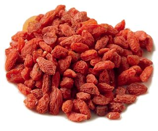
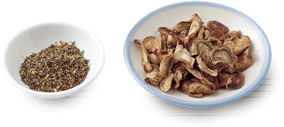

这本书分享了一百多种小茶包配方，但主要材料其实只有35种。为了方便大家，我选用了这35种生活中常见的食材，大多数在普通家庭的厨房里都可以找到。看起来很普通的食材，通过不同的搭配，就能发挥不同的作用。
在这一章里，您可以快速查阅到每一种食材的功效和选择方法的要点。
月季和玫瑰是姊妹花。但玫瑰只在每年的春末夏初开放，而月季则长年开花，在北方可以一直开到下雪之前。玫瑰是舶来品，而月季是中国自古以来就有的，在西方，它的名称直译过来就是“中国玫瑰”。
鲜花店出售的漂亮“玫瑰”，其实就是月季花；花园和公园里栽种的各种颜色的“玫瑰”，大部分也都是月季。真正的食用玫瑰是不作观赏用的，而且一般只有粉红色。
中医学认为，女子以肝为本。月季的特点是独入肝经，专门调理肝的问题，所以它是妇科良药。
月季花每月按时开放，因此得名月月红。对于女性每月的生理周期，它也有校准的作用，对于月经不规律，甚至闭经的女性很有帮助。
月季可以防止血液过于黏稠，对预防心血管病也有好处。跌打损伤之后，用月季调理可以防止瘀血。
读者评论
月季活血功效极好！跌打损伤对恢复也很好！推荐给朋友用，她的月经量少，刚好我们去野外摘到月季，泡红糖水喝，这个月的月经量多了很多。我很替她高兴！感谢老师，让我知道学习顺时生活，可以帮到他人，我很开心！
——我的世界
女人如花，玫瑰是女性的象征，而它也的确不负这个美名。常饮玫瑰茶，对女性来说，有莫大的好处，既能调身，又能调心。
玫瑰花能够理肝血、解肝郁，对于我们肝脏的气机升降功能有平衡作用。
玫瑰是双向调节的，对于肝气升发过度、脾气暴躁、肝火大的人，喝玫瑰茶能平息肝火；对于肝气升发不足、肝气郁结、情绪抑郁的人，喝玫瑰茶又能疏解肝气、舒展心情。
女性容易情绪不稳定，时而急躁，时而低落，喝玫瑰花茶调节心情再合适不过了。女性月经不调，喝玫瑰花茶可以活血通经，还有预防黄褐斑的作用。
建议女性朋友在家常备玫瑰，可以缓解经痛、腹痛、头痛，还可以补血、养颜，让你的气色变好。
男性喝玫瑰茶也是可以的，特别是工作压力大的男性，往往有肝气郁结的现象，容易引起脂肪肝。常喝玫瑰茶可以缓解压力。玫瑰的芳香还有唤醒脾胃功能的作用，对于血脂高的男性有帮助。
读者评论
——云淡风清
——DONG
——Kate
——40群读者
——晶晶
——糖依儿
——珍珍
——星火
——满满
——Cindyruan
——dore
桂花飘香的时候，最适合泡一杯桂花茶，既应景又养生。
1.养肺，预防咳喘。
2.养肝，提升脾胃功能。
3.通月经。
4.通便秘。
桂花有几种颜色，黄色的叫金桂；白色的叫银桂；红色的叫丹桂，香气最浓。
还有一种四季桂，四季可以开花。它是灌木，株型矮小，可以种在花盆里，而且耐寒，在北方也可以生长。
我曾在家里阳台上养过两株四季桂，每天都有新花开放，随时可以采摘到鲜花。不过四季桂香气较为清淡，功效不如一年只开一季的桂花。
如果是自己采摘的要注意：新鲜桂花采摘后，放一会儿，仔细观察会看到有很小很小的小虫从花瓣里爬出来。这是桂花的香味招来的小腻虫。所以刚采来的花不要马上使用，最好是先放1个小时，然后用淡盐水泡10分钟，冲洗干净。
桂花只能烘干，不能晒干，一晒香气就没有了。可以用盐来保存。按1：5，把盐和桂花一起拌匀，放在没有沾过油的干净玻璃瓶里，装满一瓶后压实，封好瓶口，放在阴凉避光的地方，可以放一年，桂花的香味不变。用的时候，取出来用清水漂洗一下，去掉盐分就可以了。
读者评论
我入睡很快，晚上也不起夜，就是梦多。这次从寒露开始，我每天喝桂花枸杞茶，最近四天下午又加喝了玫瑰花茶疏肝火，晚上用吴茱萸贴引火下行。我发现最近连续三天，早晨起来的时候完全想不起来昨天晚上是不是做梦了，而且脑子非常清醒。早晨打开窗的时候，外面院里的桂花飘香，这种起床的感觉真的是非常非常好。
——青山常在
菊花有四大名品：亳菊、滁菊、贡菊、杭菊，前三者都产于安徽。杭菊产于浙江，以杭州为集散地，所以称为杭菊。著名的杭白菊指的就是浙江产的白菊花。另外，河南出产的“怀菊”也很有名，是四大怀药之一。
菊花的主要作用是清肝明目、疏散风热，它主要作用于人体的上部，特别是头部，可以调理头晕目眩和眼睛的问题。
菊花清热解毒，对于皮肤长疖子或粉刺有消炎作用。
菊花还能通利血脉，对于预防高血压和心血管疾病都有帮助。
菊花有黄、白两种，作用相近，传统习惯上，清肝明目一般用白菊花，疏散风热一般用黄菊花。平时在家泡茶喝用哪种都可以。只是要跟野菊花区分，野菊花是小黄花，味道很苦，比较寒，主要用于清热解毒，不用作日常保健。
菊花是凉性的，脾胃虚寒的人不要多喝，以免损伤胃气。女性月经期也不要喝。
读者评论
我妹眼睛患睑腺炎（麦粒肿），我告诉她用菊花连喝带熏眼睛，下午下班就好了。老师的方法简单有效还没有副作用，真棒！
——32群读者
西方人爱说一句话：一天一苹果，医生远离我。的确如此。苹果可以说是水果中的家庭医生，有各种保健功效。
一般的水果，不是偏凉就是偏温，最平和无偏的就是苹果了。所以苹果几乎人人可以吃。
唐代药王孙思邈《千金方·食治》中记载：苹果能“益心气”，说得非常确切。现代研究表明，苹果富含锌和铁，能够养心、补血、安神，提高记忆力。
苹果不仅养心，还悦心，它是使人快乐的水果。房间里常放一盘苹果，空气特别清香，能使人心情愉快，缓解抑郁的情绪。有心事睡不着的时候，闻闻苹果的味道，能使人放松心情，尽快入睡。
苹果皮吃不吃？这个问题讨论了几十年。其实，苹果皮是可以入药的。据研究，苹果皮的含铁量是果肉的26倍。苹果皮的红色，来自于花青苷，是抗氧化、清除人体自由基的宝贝。苹果皮是健齿的，可以防止牙垢生成。
苹果有双向调节作用，生吃能预防便秘，而蒸熟了吃能调理腹泻。
生吃帮助身体排毒，可开胃、消除腹胀、降脂、预防便秘。
熟吃以补益为主，可健脾、养血、补脑、调理腹泻。
为了避免农药和保鲜剂残留，要把苹果放在加面粉的清水里好好地泡洗10分钟，然后清洗干净再连皮吃。
读者评论
今天朋友喝多了，给他送了一小瓶苹果醋，恶心症状立刻没有了，好神奇哦。剩下的当宝贝收好了。
——(*¯︶¯*)
大枣是食物中的甘草，它能调和药性，解药毒。因此煲药膳的时候，往往会配几颗大枣。它就像一个和事佬，起到一个协调作用，避免药性伤脾胃。在医圣张仲景的千古名著《伤寒论》中，有三分之一以上的方子用到了大枣。凡是气血虚弱，几乎都用大枣，而且用量不小，常用量是12枚。
治疗血虚寒厥的当归四逆汤，用了多达25枚的大枣，来起到温经散寒、养血通脉的作用。
大家都知道大枣是补血的，其实它还能给我们的身体补水，可以生津润肺。口渴又怕凉的人，吃大枣很合适。大枣也是补气的，气虚经常出汗的人常吃有好处。
俗话说：一日吃三枣，终生不显老。好多人因此大把地吃大枣，特别是害怕贫血的女性。这样不但血没补好，身体倒吃胖了，有的还吃出了口腔溃疡。为什么？因为大枣是生湿热的。凡是体内湿热重的人，比如有痰多、肥胖、湿疹、胃火重、口臭、便秘这些现象的人，越吃问题会越严重。
一日吃三枣，我们要注意这个“三”字很关键。正常人一般一天吃3〜6个是比较合适的，再多就是治病了。
如果想吃更多的大枣，可以煮水或煲汤，只喝水，不吃枣肉。这样就可以获得枣皮的功效，而又不会生痰湿。
另外，一定要注意搭配。
大枣有两个好搭档：一是陈皮，二是生姜。
脾胃虚弱的人、湿气重的人吃大枣适合配陈皮。大枣和陈皮都能健脾胃。大枣生痰，陈皮化痰。多吃大枣会腹胀没胃口，而陈皮能开胃、消除腹胀。
气血虚弱或怕冷的人吃大枣适合配生姜。大枣生湿，生姜祛湿；大枣止汗，生姜发汗；大枣补气，生姜散气。大枣和生姜搭配在一起，能调节人体的消化功能，增强抵抗力。《伤寒论》共113个方子，其中有35个药方用到了姜枣这一对搭配，取其调和营卫、补中散寒的功效。其中最有名的“桂枝汤”，被誉为“调理阴阳第一方” ，一共五味药中就包含姜枣这两味，主要作用是调节阴阳平衡，促进气血畅通。
1.看颜色。如果颜色通红，或者红绿有明显分界线的，说明是泡过的枣，而非自然成熟。
2.尝口感。泡过的枣从皮到肉都非常甜，且甜味并非自然的水果香甜。
中国人自古以来就喜欢服用枸杞子，认为它是延年益寿的灵药。
古人评价枸杞子“使气可充，血可补，阳可生，阴可长，火可降，风湿可去，有十全之妙用”。
枸杞子的关键作用是补肝肾的精血，因此可以抗衰老，预防白发。
调理血虚和肾精亏损引起的各种问题，比如须发早白、头晕耳鸣、贫血精亏等等。
枸杞子也被称为“明目子”，它明目的功效是很突出的。眼睛发花、迎风流泪或是两眼干涩的人，吃枸杞子都有好处。
老年人吃枸杞子，有降血脂、降血压，预防腰膝酸软的作用。
年轻人吃，可以使精力充沛，预防脂肪肝，还有温和的减肥和养颜功效。
孩子吃枸杞子，对牙齿和骨骼的生长很有好处。枸杞子最好的一点是，功效强，却很平和。许多补品儿童不能吃，枸杞子却可以。
古人说“去家千里，勿食枸杞子”，是因为枸杞子补肾精的作用很强。枸杞子并不含有性激素，它是通过滋补肝肾来壮精益神，使人神满精足。因此，小孩可以放心吃枸杞子。
枸杞子比较滋补，感冒发热时不要多吃。便溏的人吃枸杞子，可以配五味子。脾虚、有湿气的人，吃枸杞子要配上陈皮或莲子。
枸杞子适合日常保健，经常吃，吃够量，效果才好。泡水时，可以多抓一些，泡饮后将枸杞子吃掉。
枸杞子有不同的品种。2015年版《中国药典》规定，入药的枸杞子品种为宁夏枸杞，简称宁杞。
注意宁夏枸杞是品种的名称，并非专指产于宁夏的枸杞。在西北各地都有宁杞种植，只是品质的优劣差异较大。
《本草纲目》中记载，枸杞子“以甘州者为绝品。河西及甘州者，其子圆如樱桃，曝干紧小少核，干亦红润甘美，味如葡萄，可作果食，异于他处者”。并引用宋代沈括所言“则入药大抵以河西者为上也”。
上面所说的“河西及甘州”（古甘州的行政中心在张掖）枸杞子正是来自于现今甘肃及宁夏的几个枸杞子主产区，这些地方主要种植的是药用枸杞子——宁杞。
宁夏、甘肃的枸杞子比较小粒，后味有些发苦，这种宁杞药性上佳。
宁杞有明显的白色果蒂。现在有用未成熟的其他品种枸杞子剪掉梗来混充宁杞的，看起来个头不大，也有白色的果蒂，要注意鉴别。
1.看结块。不容易结块，个别黏结在一起也比较容易分开。
2.看浮水率。准备一杯清水，抓十几粒枸杞子放进去，浮水率越高，品质越好。
3.看颜色。暗红发紫的质量好，鲜红色的可能经过染色、硫熏或泡过亚硫酸钠。
读者评论
——芳草
——^ _ ^
很多人以为吃梨可以化痰止咳，一咳嗽有痰就用冰糖蒸梨来吃。其实梨肉是润肺的，痰多的时候，越吃梨，痰越多，特别是寒性咳嗽不能吃梨。而热性咳嗽，单用梨肉也不行，一定要用到梨皮效果才好。
梨肉以降火去燥为主，而梨皮有消炎止咳的功效。
梨肉降火，但比较寒凉，容易引起腹泻，梨皮可以止泻。
梨有各种品种，普通的雪梨、水晶梨止咳的效果比较好；圆形的砀山梨，肉质比较粗但很甜，它的皮止泻的效果比较好；新疆的香梨很好吃，但梨皮止咳的效果就一般了。
市场卖的梨可能上过保鲜剂，买回来以后要好好地清洗再削皮。
清洗方法：用加面粉的清水泡10分钟后，冲洗干净。
读者评论
这两天小孩有点干咳，用2个梨的皮煮成1杯水，煮了2次喝了2天，今天完全好了。
——海燕
柠檬的好功效，皮的作用占了大半。柠檬皮能理气、化痰、舒肝、健胃。吃柠檬一定要把皮留下。
1.生津，止渴。
2.开胃。
3.预防肾结石。
4.提高抵抗力（防感冒）。
5.杀菌。海鲜放柠檬汁可以完全杀菌。注意：最好等10分钟再吃。
6.分解油脂，减肥。
7.高血压伴有内热（口干舌燥，经常咽喉痛），可以用柠檬加荸荠调理。
8.孕妇安胎。
9.柠檬的气味有通经活络的作用，作用于人体的神经系统，能抗焦虑，抗抑郁。
10.柠檬可以防止麻醉手术后恶心呕吐。手术后将新鲜柠檬皮放在鼻孔下面，用胶布粘住，大约半个小时没味儿了就换一片，坚持一天。
11.改善头部血瘀、血液循环受阻的状态，提高记忆力，防止老年痴呆。
12.增加人体对钙的吸收率。国外曾做过一个实验，让7名36〜59岁的人每天喝450毫升柠檬汁，连喝3个月后有6人的骨密度有所上升。
13.预防经济舱综合征。坐长途飞机，久坐不动，容易形成血栓，引发经济舱综合征。特别是血瘀型体质的人手术后，静脉曲张、心血管病、“三高”等人士以及孕妇等高危人群，可以随身带一杯柠檬汁，坐飞机时喝，有助于血液循环畅通。
制作便携茶饮，用超市卖的干柠檬片当然最方便。但新鲜的柠檬用起来其实并不麻烦。早上取一个新鲜柠檬，切成片，用保鲜膜包起来带上，或是直接放入随身杯带出门，都很方便。
切开的新鲜柠檬，如果一次用不完，可以把剩下的半个切成片，淋上蜂蜜，让蜂蜜充分覆盖住柠檬的表面，装在没有沾过油的干净保鲜盒里，放入冰箱冷藏，能保存很长时间，随时可以取出来使用。
柠檬能结三季果，但主要是在冬天成熟。其他季节上市的柠檬大多是用催熟剂催黄的。因此，新鲜柠檬买回来一定要用加面粉的清水泡上10分钟，然后冲洗干净再用。
读者评论
柠檬水喝了八天，觉得身体轻了，肚子小了一点。
——12群读者
古人给西瓜取了一个美称：天生白虎汤。白虎汤是中医名方，是治热病的。西瓜的功效，就相当于一剂温和的白虎汤。在酷热的夏天，人们感觉全身发热，出汗多，口干舌燥，这时候吃上一块清凉的西瓜，好比救急的良药，顿时就舒服了。
一个西瓜包含了绿、白、红、黑四种颜色。外层瓜皮绿，里层瓜肉红，瓜子黑，瓜子仁白。颜色不同，功效也有区别。瓜皮、瓜肉性寒，瓜子性温。
西瓜外层的青皮是一味中药，叫作西瓜翠衣，有清热止渴的作用，可以晒干泡茶喝，能去心火。里层的白皮可以当菜吃，有利水消肿的作用。
西瓜子可以去心肺积水。黑色的外壳能止血，白色的瓜子仁能化痰。
西瓜子还有一个用处，可以预防吃西瓜后肠胃的不适。脾胃寒湿重的人吃西瓜，会出现胸闷胃胀、嗳气的现象。准备一盘干的西瓜子一起吃，就没事了。
西瓜的瓜肉可以凉血，祛除上中下三焦之热，上能清心肺火，中能清肝胃火，下能清膀胱火。它能把心火往下引，通过小便排出去。
西瓜清火，是很寒的，吃多了会加重脾胃的寒湿，引起腹泻。病后体虚的人和产后的女性不要吃。
山楂是现代“富贵病”的克星。它降血脂、降血压的功效很好，又能消肉食、减肥，还有强心的功效，对于冠心病、心律不齐都有调理作用。
市面上出售的山楂有三种：山楂、山里红和野山楂。
野山楂主要产于南方，个头比较小，肉也薄，味道有些涩。山楂和山里红主要产于北方，它们长得很像，只是山里红的肉更厚些，味道也好点，适合鲜食或是熬制山楂果酱。老北京著名的冰糖葫芦，用的就是新鲜山里红。
入药时，山楂和山里红一般统称为北山楂，野山楂一般称为南山楂。它们的作用相近。一般来说，北山楂消食化瘀的功效要强些，南山楂杀菌止痢的功效要强些。
怎么区别从药店买来的是北山楂还是南山楂呢？北山楂一般是切成片的，而南山楂一般是整个儿晒干的。
买干山楂要注意辨别真假。山楂的表皮比较粗糙，上面有许多灰白色的斑点，而且核相当坚硬。如果表皮光滑，没有斑点，核不够坚硬，就不是真正的山楂。
山楂一般不生吃，尤其不能空腹生吃。生山楂吃多了伤胃，对牙齿也有腐蚀作用，有龋齿的人特别要当心。
注意：孕妇、胃酸过多的人、胃溃疡和十二指肠溃疡患者不宜吃山楂，服用补药期间也不要吃山楂。
读者评论
过年时大鱼大肉吃得胃不舒服，下午回家刚好看到陈老师关于过年积食的视频，家里还有山楂干，马上拿一把放锅里炒，然后煮水喝了，晚上就吃稀饭和腊八蒜，现在胃舒服了很多。
——读者朋友
当我们喝带有山楂或乌梅的小茶方时，如果觉得酸，又不想放糖，可以加一个罗汉果进去，茶的口味马上会变清甜，却不会增加糖分摄入。
罗汉果是天然甜味剂，它不含糖分，却含有一种罗汉果甜苷。这种营养素比蔗糖甜300倍，喝起来跟糖的口感相似，还有降血脂、抗氧化、调理肝损伤的功效。
平时不能多吃糖的人，可以用罗汉果来代替糖使用，比其他的代糖剂和甜味剂安全，还可以调理糖尿病和降血脂。
罗汉果产于广西，是罗汉的果实。罗汉，是一种爬藤植物，是葫芦的亲戚。
新鲜的罗汉果是绿色的，烘干后可以保存很多年。
我曾经做过实验，一盒罗汉果在家里放置了十来年，打开来看，中间的核都变成粉末了，还是没有坏。
听声音：罗汉果挑选外皮干，里面不空心的才好。买的时候可以放到耳边摇一摇，听一听，如果感觉里面能摇动发出声音就是太干了，有点空心。
看成熟度：每年9到10月，罗汉果成熟得刚刚好，这种叫作中期果，药效最佳。挑选的时候可以看皮色，偏绿的是早期果，不如中期果成熟度好。
看颜色：皮色深棕的罗汉果，是高温烘干的，煮出来的水会有一股药味。皮色黄绿的罗汉果，是低温烘干的，煮出来的水甘甜清香，没有药味，孩子会更喜欢一些。
允斌叮嘱
罗汉果一定要连皮带核一起用。它的果皮作用于肺和胃，果核作用于肾，要留下核才能补到肾气。
读者评论
——想想山东
——cherry
——心怡
——4群读者
——安心若水
——风和日丽
——顺时打卡群读者
——8群读者
——心怡
——6群读者
——期待～
——小如微尘
——阿艳
——桥
——胡艳
葡萄干与新鲜葡萄有什么区别？当我们吃新鲜葡萄时，很难将皮和籽吃下去。而葡萄干却是连皮带籽的。
葡萄的皮和籽中，抗氧化营养成分比葡萄果肉高，抗衰老作用更好，吃葡萄干可以让我们利用到葡萄的完整功效。
脾胃虚弱的人，消化不良的老年人，常吃葡萄干可以健脾开胃。
葡萄干在晾晒过程中会沾染很多灰尘，买回来之后要好好地清洗一下再吃。
1.葡萄糖。
2.铁。
3.果酸。
4.类黄酮——抗氧化剂。
1.抗衰老。
2.舒筋骨。
3.降血压。
4.消水肿。
5.养肝血。
6.安胎儿。
7.解孕吐。
8.促消化。
古时把核桃称为胡桃，认为是张骞通西域时从胡地引进中原的。1972年，在河北邯郸地区挖掘出7000多年前的核桃，才知道中国也是核桃的原产地之一。难怪核桃是中国人最常吃的干果，我们的消化系统经过几千年的适应，对核桃再熟悉不过了。
因为太熟悉、太家常，我们只把核桃看作保健食物，其实它的滋补作用是很强的。如果你想补肾，不一定要吃什么珍稀的补品，坚持吃核桃就有意想不到的效果。
核桃仁是《中国药典》正式收录的一味药，常用于补肾阳。
【功能】补肾，温肺，润肠。
【主治】用于肾阳不足、腰膝酸软、阳痿遗精、虚寒喘嗽、肠燥便秘。
（《中国药典》2015年版）
除了载入药典的功能之外，核桃还有一个少为人知的功效——化瘀。从小就总听母亲教导：“核桃是‘追瘀血的’，可以帮助排出人体内残留的瘀血。”女性由于血瘀引起严重痛经、生孩子后恶露不净时，用核桃的效果特别好。
人们不了解核桃活血的功效，只知道它是补肾、补脑的，没有让它物尽其用，有时候又会用错。比如许多怀孕的女性为了使宝宝更聪明，大把地吃核桃。但如果是有习惯性流产史的人，在怀孕早期吃太多核桃，就有一定的风险。
核桃对大脑有补益作用，并不是因为核桃仁长得像人的大脑，是因为核桃可以补肾。
肾和大脑是相通的，一个人如果肾精充足，脊髓就充足；而脊髓充足，就可以充实脑髓。
因此，小朋友多吃核桃可以增长智力，怀孕中期和晚期的女性吃核桃也可以促进胎儿脑神经的发育（孕早期则不建议多吃）。
核桃是温补的，还通便，火重的人、腹泻的人不要多吃，感冒痰多时不要吃。还有，喝白酒或浓茶时不要同时吃核桃。
核桃壳如果颜色洁白均匀没有黑斑，可能是漂白过的。这种壳不要用。
由于核桃仁含有丰富的核桃油，如果用薄皮或纸皮核桃，注意不要保存太久，因为皮薄不容易保质。
以前的那种老品种核桃，皮很坚硬，剥壳不太方便。但这种厚而致密的壳，对里面的核桃仁却是一个很好的保护。
读者评论
——如意
——梅子
——石悦静
允斌解惑
千江问：书中茶方有的要煮很长时间，比如煮核桃壳要一小时，因为时间关系能否用电高压锅煮？
允斌答：可以的，用高压锅煮时间短一些。
好多人害怕喝桂圆茶上火。如果你把桂圆带壳一起泡茶来喝，那就不容易上火了。桂圆壳是祛风解毒的，能祛邪气。单用桂圆壳泡茶，可以调理因受风引起的头晕。
古人把桂圆称为“荔枝奴”，因为它与荔枝有些相似，但是个头儿要小许多，也没有荔枝那么娇贵难以保存。其实从保健功效上来说，桂圆比荔枝的应用范围要广泛得多。桂圆是温性的，并不像荔枝那样是热性的。荔枝入药不多，而桂圆则是中药方子中常用的补品。
一样桂圆有三样药——桂圆壳、桂圆核、桂圆肉。
桂圆壳轻，它是走头部的，专门祛除头部的风邪。经常喝点桂圆壳茶，到年老时就能头不晕、耳不聋。
桂圆核重，它的作用往下走，专门祛除下焦的湿气，还能止痛。可以用来调理寒性的肠胃炎和疝气引起的疼痛。焙干研成细末后，可以用来止血，促进伤口愈合，而且不留瘢痕。特别是头部的小伤口，敷了桂圆粉后，愈合以后还能长出新头发来。
桂圆肉不轻不重，它作用于人体的中部，专门补益心脾，养气血。很多人以为红枣最补血，其实桂圆肉补血的效果更好，而且不像红枣那样容易生湿热。
读者评论
——美丽的早晨
——颜欣欣
——江南菡萏
古人认为松针是神仙长生不老的食物，不仅把它当茶饮，也当菜吃，煮松针饭、松针粥。
《本草经集注》把它列入“草木上品”：“松叶，味苦，温。主风湿痹疮气，生毛发，安五脏，守中，不饥，延年。”
现代研究发现，松针的确有延缓衰老的作用。用果蝇做实验，用0.8%浓度的马尾松针水来喂养果蝇，平均寿命从32天延长到了40天，相当于人类延寿24年。松针的功效很多，可以祛风，活血，明目，安神，解毒，可以用来预防流感、支气管炎，调理风湿关节痛、失眠、神经衰弱等慢性病。还有一个特别的功效就是促进头发生长。
冬吃苦，把肾补。这是我编的四季五味饮食口诀中的两句。意思是冬天吃些苦而性温的食材，可以帮助祛除人体下部的寒湿，有强肾的作用。
松针是苦而性温的食材中保健功效很突出的。对一般人来说，如果想在秋冬季喝些保健茶，松针是一个不错的选择。
鲜嫩的松针可以直接榨汁，用甘草、蜂蜜等甘味食材调和它的苦味，就适合四季饮用了。
有老年朋友采摘松针泡茶喝，结果喝完以后感觉头晕。这是为什么呢？是因为新鲜松针上有松油，如果不处理，有的人服用之后就会有不良反应。因此，使用松针一定要事先处理一下松油。
还要注意，松油很容易黏附空气中的灰尘，所以看起来绿油油的松针其实并不干净，一定要好好地清洗。
1.先用一盆清水，加少量面粉搅匀，放入松针，泡1小时，冲洗干净。
2.再用一盆清水，加少量碱粉溶化，放入松针，泡1小时，冲洗干净。
3.不喜欢松针苦味的人，可以再把松针放在5％的盐水中泡半天，然后换清水泡2小时，去除苦味。
经过这样处理的松针，泡茶时药性能够更好地析出，口感也更好。
允斌解惑
伟问：松针茶里的松针是任何松树的都可以吗？
允斌答：我们日常见到的松树大多都可以，但不是任何松树都可以。松树有200多种，中国的传统品种大约有32种，可以入药的有13种。常见的马尾松、云南松、湿地松、油松、红松、黄山松这些都可以用。
黄芪又称小人参，它的作用与人参相似，都是补气良药。但人参补的是元气，作用迅猛，不能轻易使用。而黄芪补的是脾肺之气，比较温和，功效却很强大。
除了补气之外，黄芪还有几个用处：
1.扩张血管，降血压，预防中风。
2.固表止汗，增强抵抗力，预防感冒。
3.利尿消肿，能调理肾炎、水肿，还能帮助虚胖的人减肥。
4.脱毒生肌。皮肤上如果有经久不愈的疮或溃疡，吃黄芪能促使脓毒排出，促进伤口愈合。
人体的心肝脾肺肾，黄芪都能补到。它能解脾湿，升肺气，强心气，益肾气，补肝虚。高血压、糖尿病、慢性肾炎等一些慢性病，还有手术后的病人、体质较虚的人，可以用黄芪来调理。一动就出汗，肺活量比较小，甚至内脏下垂的人，属于中气不足，最适宜用黄芪进补。
北方人把黄芪视为药材，其实南方人经常用它煲汤。古人更是把黄芪运用在寻常餐食之中，特别是大病初愈或是长期吃素的人，由于气血不足，往往会用到黄芪补气。
黄芪入药的部分是它的根部，所以熬的时间要长一点，才能熬出它的药性。
从前我家是用整根的黄芪，所以特别强调要“三煎三煮”。现在药店多制成柳叶片、指甲片。小片的黄芪，用保温杯闷泡也可以。当然，有条件还是久煮更佳。
注意：黄芪大补，急性病、感冒或身体有实热的时候不要用。特别是感冒时，如果喝了黄芪，会把感冒病邪封闭在体内，千万要注意。
读者评论
——琦琦
——李子
——lisa
——李蒙
——朱爱平
——ebelle Fleur
——笑看花开
——哈尼
陈皮是陈旧的红橘皮。吃完红橘以后，橘皮不要扔掉，留下来晾干保存一两年以上，就是陈皮了。
陈皮看似不起眼，却是一味不可或缺的中药。它能“治百病”，如果没有陈皮，很多中药方子就开不出来了。
1.使脏腑之气畅通。
2.化除体内湿邪。
3.调和脾胃功能。
凡是牵涉“气”和“湿”的病，都能用到陈皮。一般日常生活中常见的小病，不论是跟呼吸道有关的，如风寒感冒、咳嗽痰多、胸闷；还是跟消化道有关的，比如消化不良、呕吐、海鲜中毒、醉酒，除了内热重的情况，吃点陈皮会很有帮助。
读者评论
——若如初见
—— 智慧果
——快乐每一天
陈皮有一个神奇之处，就是它能“嫁鸡随鸡，嫁狗随狗”。陈皮配补药，能发挥补的功效；陈皮配排毒药，则能发挥排毒的功效。与其他食材或药材搭配，发挥辅助作用是它的专长。
自己晾晒的陈皮，用的时候用清水洗一下浮尘就可以了。如果是买来的陈皮，为了保险起见，最好用加面粉的清水泡10分钟，然后清洗干净。
1.制作陈皮要选用红橘。红橘的特点一是有籽；二是皮与肉分离；三是口味酸甜，并不是纯甜。蜜橘没有籽，它的皮入药就不行。
2.橘子先不要剥皮。用淘米水或加面粉的清水把橘子泡10分钟，清洗干净表面可能存在的保鲜剂残留。
3.用细盐轻轻地搓洗橘子的表皮，然后清洗干净。
4.剥下橘皮，剥的时候要注意剥成“四瓣花”，方便晾晒和保存。
5.将橘皮放在通风的地方晾干，北方冬季需要1〜2星期，南方需要2〜4星期。
6.将干透的橘皮装塑料袋或者盒子里密封保存，写上日期，到第二年就可以用了。存放两三年的，药效更好。
7.南方地区潮湿，陈皮容易发霉或虫蛀，最好是每年夏天拿出来晾晒一下，这样就可以长久保存了。只要保存得当，陈皮的保质期可以很长，越陈越好。
陈皮应该是红橘的皮，但现在收购时往往鱼目混珠，导致市场上出售的陈皮常常混有橙子与其他品种柑橘的皮。橙皮的药性与橘皮有区别，如果药方里误用了，会影响疗效。
现在药店卖的陈皮很多是切成丝的，我们如何辨别是否混入了橙皮呢？
很简单。为了直观地了解橘皮与橙皮的区别，你可以分别剥开一个橘子和一个橙子的皮，把白色的内层朝上，并排放在一起比较一下，就一目了然了。
橘皮的内层质地很疏松，比较粗糙；而橙皮的内层质地很紧密，表面光滑。这是它们最大的区别。晒干之后，橘皮会卷曲，而橙皮还是平整的。
因此，你只要看一下买回来的陈皮，内层质地疏松粗糙，外形卷曲不平的，就是橘皮；而内层光滑紧密，外形平整的，就是伪品。如果闻一下气味，你会发现，橙皮的香味比较淡；而真正的陈皮，有一股浓郁的香气。味道越香，说明陈皮品质越好。
多数时候，大家买回来的陈皮丝是混杂的，从里面既能挑出橙皮，又能挑出各种品种柑橘的皮。各种品种的橘皮切成丝以后，对于普通人来说，就不太容易鉴别哪一种是真正的陈皮，因为“神仙难认刀下药”嘛。
因此，最好是选整个的陈皮，这样就比较容易看出是红橘的皮还是其他品种柑橘的混伪品。因为红橘的皮色比其他柑橘更红，并且皮很薄，表面的油脂胞特别明显。
读者评论
——佩
——28群读者
小时候家里的早餐常有一小碟子泡姜，是喝粥的小菜。这碟泡姜很受欢迎，全家老小都爱吃。还有个口诀，全家人都朗朗上口：早吃姜，补药汤；午吃姜，痨病戕；晚吃姜，见阎王。
姜是要在早上吃的。早上吃姜，保健养生效果最好。一可以生发胃气，促进消化；二可以振奋精神。而中午以后吃姜容易伤肺，引起肺热。晚上吃姜就更不好了，会刺激神经，扰乱睡眠，影响心脏功能。
吃姜要看早晚，还要看季节。夏天适合多吃姜。
天热，人的毛孔张开，容易感受外邪；同时食物中的细菌繁殖也快，容易病从口入。吃姜可以杀菌、抗病毒、增强抵抗力，还可以解暑。夏天人们爱开空调，爱吃生冷，常吃点姜，暖暖脏腑很有必要。秋天则不适合多吃姜，容易燥热伤肺。
以上说的吃姜的各种宜忌是把姜当保健品专门来吃时的讲究。姜是老天爷送给我们的宝贝，平时做菜把姜当调料，或是入药，是根据需要来用的，不受时间的限制。
居家过日子，可以说不可一日无姜。比如大闸蟹是在秋天吃，那一定要蘸姜、醋。受了风寒，不分早晚，都可以喝姜汤。
姜肉和姜皮是阴阳互补的。姜肉热，姜皮凉。姜肉发汗，姜皮止汗。平时做菜不要去掉姜皮，感冒喝姜汤则要去皮，以加强发汗的力量。
读者评论
——宋宋
——52群读者
乌梅是采摘没有成熟的梅子烘干闷制而成的。“吃梅接命”，梅子延寿的作用，乌梅也具备。炮制成乌梅之后，还增添了清补和健胃的功效。
中国人的“国民饮料”酸梅汤，就是以乌梅为君药来熬制的。
很多人以为酸梅汤是寒凉清火的饮料，其实它并不寒凉，而是清补的。酸梅汤的清补，来源于乌梅的作用。
乌梅能清虚热，补阴虚。夏天人出汗多容易伤阴，而伤阴之后容易引起虚热，比如睡觉出汗，手脚心发热，心里烦热，这就是虚热。乌梅能生津止渴，还能止汗，防止出汗过多伤气、伤阴。
乌梅不是夏天才用，四季都可以用。人体秋收冬藏；如果收藏不力，可以用乌梅来帮助。
乌梅的最大好处是可以“引气归原”。人体的五脏之气如果不走规定路线，就会发生问题。比如，肺气如果往上逆行，就会引起咳嗽。而乌梅能把人体内乱窜的气收回原位，这叫理气而不伤气，既纠正了气的逆行，又不伤害人体的正气。
感冒、咳嗽初起时不要吃乌梅。
超市里的话梅不是乌梅，乌梅是一味中药，在中药房可以买到。
这些年经常发现乌梅有掺假的现象。有的用桃子、李子、杏的幼小落果来冒充。
尝——桃子冒充的乌梅味道不够酸。
看——剥掉果肉看果核，李子、杏的果核外观有点不同，梅核表面有凹点，李核、杏核的表面没有凹点。
现在采用传统炮制方法的人越来越少了，很多是用煤熏和染色，用煤炭甚至硫黄快速烘干梅子，染成黑色。
劣质乌梅煮出来的梅汤色香味都不佳，因此现在酸梅汤配方越做越复杂，掺入各种材料来调色调味，喧宾夺主，已失去了乌梅为君药的本义。
采摘半黄梅子，炕焙两到三天，炕下面放上干草和树枝燃烧，利用烟来熏制梅子，熏到颜色棕褐，起皱皮；再闷制两到三天，直到果皮和果肉都变成黑色，就成了道地的乌梅。
鉴别点：
劣质乌梅——梅子整体呈现均匀的黑色，煮出来的汤色浑浊，有焦味。
道地乌梅——颜色不均匀，煮出来的汤色清亮，喝起来酸中微苦，并有一种淡淡的草烟味。
读者评论
长红疱，用老师茶方乌梅生地汤（药店买的材料），有效果，可还是继续发作，无比地痒，每天没有食欲。上周觉得自己汗很多，喝了两天家里的乌梅甘草汤（甘草陈皮梅子汤），意外发现红疱全部不痒了，变成皮肤表面的色素沉淀。由衷地感慨，食材的质量差异，带来不同的效果，真的不是老师的茶方起效太慢。
——33群读者
桃、李、杏是中国人传统的水果。它们都有果核，果核里面有果仁。果仁是果树的种子，是植物的精华所在。桃仁、李仁、杏仁都是可以入药的。
杏仁是润肺止咳的。平时大家常吃的“大杏仁”其实不是杏子的果仁。杏子里面的杏仁是小小白白的，只有小指指甲盖这么大。杏仁有两种：苦杏仁和甜杏仁。苦杏仁是做药的，有少量毒性，它能治咳嗽、气喘。甜杏仁可以当菜吃，是补气的，有润肺润肠的作用。
桃仁、李仁对于便秘、哮喘和妇科病都有作用。李仁是活血的，桃仁效果更厉害，是破血的，可以用来调理身体内有血瘀的情况。
桃仁、李仁、杏仁都有美容的作用。爱长痘的人，可以用桃仁；脸上有斑的人，可以用李仁；皮肤粗糙的人，则可以用杏仁。
切记：孕妇忌用桃仁、李仁。
药店可以买到桃仁、苦杏仁。甜杏仁最好是去商店购买，自己收集的话，要注意不要误用苦杏仁。桃仁、李仁则可以在家自制。
方法：
1.把桃核或李核砸开，取出果仁，放入开水锅里煮一下。
2.煮到果仁外皮有点发皱了，捞出来，放入冷水里泡凉，然后剥掉外皮，去掉尖头，用铁锅干炒到微微发黄，晾干保存。
注意几点：
1.新鲜的生果仁含有微量的氢氰酸，有微毒，要加工过才可以吃。
2.果仁外面包裹着一层果皮，这层皮的药效很强。如果要连皮用，建议先咨询医生。最好将果仁去皮，炒一下，这样比较温和，不会太伤身。
3.果仁的一头扁，一头比较尖，这个尖头也要去掉。
我喜欢把荷叶比作药中的淑女，它的味道苦涩中带着清香，功效温柔平和。能平息心火，解暑邪，却不寒凉；能提升脾胃之阳气，祛湿气，却不燥热。荷叶有一个很大的好处，就是可以升发清阳。这个功能很重要，人体的清阳之气往上走，浊阴之物才能往下降。清阳不上升，人就没精神，感觉头昏，面色发黄。浊阴不下降，水湿和废物排不出去，人就会出现消化不良，吃一点东西就肚子胀，或者打嗝、呕吐。荷叶帮助人体升清降浊，也就改善了脾胃的功能。
荷叶是微碱性的，能抗疲劳，缓解压力，又能降脂减肥。它可以中和过多的胃酸，有胃酸过多型胃炎、胃溃疡的人常喝，有养胃的作用。
荷叶是“刮油”的，营养不良、身体瘦弱的人不要多用。
10年前荷叶还需要去中药店买，现在我们可以很方便地买到干荷叶和炒荷叶茶，夏天也可以买到新鲜的荷叶。
如果需要长期喝荷叶茶减肥，或者秋冬季想喝荷叶茶，最好是用炒制的荷叶茶，也就是炒荷叶。
1.在清晨阳光晒到荷叶之前，摘取还没完全长开的嫩荷叶。
2.将荷叶洗干净，去掉叶脉，切成丝，然后按做绿茶的方法，放入无油的炒锅，快速翻炒，把荷叶炒软。
3.装到竹子做的筲箕里，趁热用手揉制。
4.再次入锅重炒，然后取出揉制。
5.这样反复几次，直到荷叶被揉成颗粒状。
6.最后再放入炒锅，轻轻地翻炒几分钟，然后关火，让锅里的余温把荷叶彻底烘干。
注意：炒的温度要控制在小火，反复地多炒、多揉几次，使荷叶的清香融入火香。这样炒出来的荷叶会比生荷叶更好喝。
功效：炒制的荷叶不能解暑，但健脾、减脂的作用更强，对经常流鼻血的人有调理作用，同时还能缓解夜频尿多的症状。
允斌叮嘱
读者评论
——范范
——兰兮
竹茹也叫作“竹二青”，是把竹子外层的青皮刮去后，把中间的那层刮成一条条的，晒干制成的。在中药店可以买到，一般是成团的。竹茹很轻，10克就有好大一团。
竹茹是用来化热痰的药，它有清热、凉血的作用。它的作用是很平和的，所以也可以用来调理孕妇和小孩的病，比如妊娠呕吐、鼻出血、牙龈出血。
竹茹有清热凉血的作用，清的是上焦的火：
1.清心火，凉血。2.清肺火，化痰。
3.清肝火，除烦。4.清胃火，止吐。
竹茹是凉性的，可以止胃热呕吐，但胃部受寒后呕吐的人不适用。
竹茹与陈皮相配可散热排浊，再加上蚕沙可以快速退热。
不是所有的竹子都可以做竹茹，入药要求用淡竹、大头典竹、青竿竹。
道地的竹茹药材，是选取生长一年的嫩竹，在冬天采伐，只取刮掉外皮后的头一层青皮。
竹茹的伪劣品比较常见，一般是掺杂竹竿的白色内心、竹工艺品加工时刮下的废竹丝，或者用产量极高的毛竹等其他品种竹子来做。
鉴别点：
伪劣竹茹——颜色不正，气味淡或者有异味。
正宗竹茹——颜色青绿，有明显的竹子清香。
读者评论
今天喉咙痛、干、紧，煲竹茹牛蒡水喝，很快就缓解了，效果很好。
——金
芫荽，北方俗称香菜，它是心脾两脏的保健菜。香菜能提升心胸的阳气，又能激发脾的功能。
有的人感冒后调理不当，呼吸道炎症没有好，影响心肺功能，会产生胸闷的感觉，甚至睡觉时心脏怦怦跳把自己吓醒。香菜能帮助预防这种感冒后遗症。
吃牛羊肉时最好配香菜，不仅去膻气，还能增强消化能力，避免肉食积滞在肠胃里。
肠胃消化不良、寒性体质和胃寒胃痛的人。
下列几种人不适合吃香菜：
1.胃热的人，吃多了会口臭。
2.出汗多，特别是汗味重的人，吃多了会加重体味。
3.气虚的人，吃多了会更气虚。
4.手术后的病人，吃多了容易造成瘢痕增生。
5.皮肤过敏或是大病初愈的人，吃多了容易引起病情反复。
香菜的根部药性很好，吃的时候不要扔掉。
注意：吃了香菜，不要晒太阳，否则可能使人产生光敏反应，容易发生日旋旋光性皮炎，或是使皮肤变黑。
读者评论
昨天晚上给老公来了份手抓香菜，今天早上醒来他对我说感觉胸口特别舒服，赶紧分享给他那些心脏不好的哥们儿。今早再来一份！
——27群读者
马齿苋是一味中药，也是一种野菜，北方有些地方把它叫作马须菜。
很多野菜有地域性，而我发现，几乎从南到北的人都会吃马齿苋。它的生长范围也广，从东北到海南，全国到处都有；多冷的地方，多热的地方，它都能生长，而且不择地，只要有一点点土就长得挺好。田间地头，房前屋后，但凡有个空地，都能采到马齿苋。
如果采摘马齿苋来晒干菜，你会发现无论怎么晒都晒不干，必须用水焯过，或者用草木灰揉制。
马齿苋这种强大的抗晒抗菌能力，特别适合用于皮肤急救。
如果脸上的痘痘化脓了，可以取新鲜马齿苋捣碎，敷贴在痘痘中小白点的周围，用它追脓；晒伤后也可以用它进行紧急护理。
马齿苋被称为长寿菜，它有很强的保肝作用。植物中，它的Ω3脂肪酸含量最高，可以与海鱼相比。Ω3脂肪酸可以降低胆固醇和甘油三酯，防治心血管疾病。
马齿苋性寒凉，却不凉胃，它专门清除心、肝、肺和大肠之热。它对于肠道的保护作用尤其好，能排出肠道毒素，对于痢疾、便秘都有调理作用。
马齿苋有滑胎的作用，孕妇不要吃。腹部受寒引起腹泻的人，正在服用鳖甲这味中药的人，不要吃马齿苋。
马齿苋的茎是红色圆柱形的，叶子肉质肥厚，很好辨认，可以自己采摘。有的菜市场也有新鲜马齿苋出售。如果找不到新鲜的，可以到中药房去购买干品。
读者评论
——12群读者
——12群读者
——小蕾
——温暖
——娜娜
——林林
——圈圈
植物越接近根部，药性越好。大家一般把芹菜根切下来都扔掉，很可惜，其实它是肾的清道夫，可以帮助肾排出湿毒。
肾湿毒淤积有什么后果呢？会引起湿疹反复发作、下颌长痘。特别是男性，许多人爱喝酒，吃很多肉食，容易造成肾有湿热，有的人会在腰上长湿疹，有的人则会出现小便疼痛、小便出血，甚至小便像洗米水一样发白、混浊。平时多用芹菜根，可以帮助肾把这些毒及时排出去，让肾保持清洁。
芹菜有三种：西芹、药芹和香芹。西芹当菜吃很脆嫩，但药性最弱。药芹就是传统老品种的中国芹菜。香芹的秆很细，叶很嫩。香芹和药芹的作用相近，如果要区别的话，香芹偏于清肺化痰，药芹偏于平肝利湿。降血糖可以用香芹，降血压就用药芹。
把芹菜根用热水加上面粉泡洗10分钟以上，用清水洗干净，再用开水烫一下。可以直接用新鲜的，也可以晒干备用。
读者评论
——海丽
——28群读者
——32群江南
——50群莹
鱼腥草既是中药也是一种野菜，现在几乎都是人工栽培的。有的地方把它叫作“折耳根”，有的地方叫“摘耳草”，还有叫“猪鼻孔”的。它的古名叫蕺菜，是古人常吃的，越王勾践还曾采蕺治他的口臭。后来这个传统只在南方部分地区保留下来。现在无论南方北方都能买到新鲜的鱼腥草了。
鱼腥草是天然安全的植物抗生素，清热、消炎、抗病毒作用很强。人体全身各处，不管哪里有炎症，都可以用到鱼腥草，它对于各种细菌、病毒引起的感染都有疗效，上可以治上呼吸道感染，下可以消除泌尿系统炎症。在风热感冒初起的时候，马上喝一些鱼腥草水消炎，就可以退热。
鱼腥草可以说是“万能消炎药”。它的功效实在是太好了，我跟身边的所有朋友都推荐过：家里一定要存放一些，以备不时之需。
一般而言，抗生素都有副作用，而鱼腥草是食物，没有毒性。卫生部已经指出，滥用抗生素毁了中国一代人，所以，生活中的小毛病，能不用抗生素的时候，尽量不要用。
抗过敏：当接触过敏源或日晒后，皮肤出现颜色发红的小疹子，可以用新鲜鱼腥草榨汁喝。
退热：能调理风热感冒、炎症引起的发热。
抗辐射：是唯一经过验证可以抗核辐射的食物。
鱼腥草用新鲜的效果最好。但新鲜鱼腥草有独特的气味，喜欢的人爱得不得了，不喜欢的人完全接受不了。不喜欢鱼腥草味道的人，可以用干品。干鱼腥草泡茶是没有什么味道的，淡淡的，有点像红茶。每次用的时候，抓一把就可以，它是食物，剂量不需要十分精确。
新鲜鱼腥草在菜市场和超市有售，干品鱼腥草可以到药店购买。
读者评论
——九九
——ggsinging
——xiong熊
——清净之心
——欣欣而来
——小林
——细雨轻愁
——粒粒肥
——狮子座的狮子
——瑾娴
——莫小莫
——8群读者
——27群读者
——午后阳光
——兔宝宝
——静守己心
——尤艺霖
——冰淇淋
——小花
——阳光心情
牛蒡是一种蔬菜，长得很像山药，比山药还要细长一些，很长的一根。以前中国人吃得不多，日本人吃得比较多，认为它的保健效果特别好，甚至给它取个名字，叫作“东洋参”，其实牛蒡原本是我们中国的东西。
在大山里采药时，我见过野生牛蒡，那叶子碧绿硕大，根入地三尺，显示出蓬勃的生机，所以土人才以“牛”名之。
这种生机勃勃的植物，对我们的生命也有特别的帮助。牛蒡是保健作用很强的蔬菜，适合全家人每天食用。
牛蒡含有抑制肿瘤生长的物质，可以抗癌。
它有洁血排毒的功效，有助于降血脂、降血压、预防胆结石。
中医用牛蒡的种子入药，叫牛蒡子，用来治疗咽喉肿痛。牛蒡也有这个功效。扁桃体发炎红肿时，可以把新鲜的牛蒡洗刷干净，榨汁来喝，可以消肿。
牛蒡通便的效果立竿见影，适合调理胃热、有实火导致的大便干燥、便秘。
牛蒡老了会木质纤维化，吃起来很硬，质地细嫩的牛蒡才好吃。买的时候要选择整根笔直、粗细均匀的。用手抓住牛蒡的粗头把它拿起来，如果前面的细头自然下垂，就说明这根牛蒡比较鲜嫩。
牛蒡含铁量很高，切开后很快就会发黑。为了避免变色，切牛蒡的时候要准备一盆清水，把切好的牛蒡泡在里面。
读者评论
——9群读者
——小丽
——思语
——安和
——可儿
——似水流年
——读者朋友
——读者朋友
小时候，妈妈爱在家里阳台上种丝瓜，后来我自己也种。其实家里种丝瓜，一个夏天下来也结不了几个，但我们要的不只是瓜，而是丝瓜的各个部分。
丝瓜整株都有药用价值：瓜肉、瓜皮、瓜蒂、瓜子和丝瓜络有清热消肿的作用，丝瓜花可治肺热咳嗽，丝瓜叶可治皮炎，丝瓜藤可治慢性支气管炎，丝瓜根可治鼻窦炎。
不管是用丝瓜的哪个部分，它们的基本作用都是清热毒。人体全身上下，只要有滞留的热毒，都能用到丝瓜，比如痰黄咳嗽、咽喉肿痛、皮肤红肿、大便干结、痔疮等。
秋天丝瓜老了之后，药性更好，有疏通人体络脉的作用，能通乳汁，还能祛风湿，对痛风病人很有帮助。如果找不到老丝瓜，可以去药店买入药用的丝瓜络。药店卖的丝瓜络有两种：一种是普通丝瓜去掉皮晒干的，称为丝瓜络；另一种是粤丝瓜连皮一起晒干的，称为丝瓜布。粤丝瓜产于广东，它的形状比较特别，带有10条棱。两者的效果是差不多的。
丝瓜是清热毒的，所以它特别寒，阳虚的人不能多吃，吃的时候一定要配姜。
读者评论
——喵喵喵
——京津乐道
——3群读者
莲子心是莲子里面那根细细的绿芯。有些人不喜欢它的苦味，就给去掉了。市场上买的莲子，有一些直接去除了莲子心。
其实，莲子虽然补，却容易引起便秘，如带着莲子心吃就好多了。一般人吃莲子，最好是不要去莲子心。
莲子心的功效很好，它是专门去心火的。它虽然寒凉，却不凉脾胃。而且它清心火不是像一盆冰水将火扑灭了事，而是由心走肾，将心火下引到肾，从而坚固肾脏；又将肾水上引到心，从而平息心火。因此，莲子心对于心肾不交型失眠很有帮助。
简单地说，当心火扰乱心神引起心烦失眠的时候，就可以服用莲子心。
我们都知道冬瓜是清热利水的。它的籽、皮和瓤也有这样的作用，而且功效各有侧重。
广东人用冬瓜煲汤，冬瓜皮是会留下一起用的，这样清热利水的效果才好。冬瓜皮偏寒性，热性体质的人用可以清热，祛除体内多余的水分。
吃了冬瓜，可以把瓜瓤留下晒干。冬瓜全身都凉，只有冬瓜瓤基本不凉，比较温和。怕寒凉的人可以用冬瓜瓤利水；想美白的女性，可以用新鲜的冬瓜瓤煮水洗脸。
冬瓜子入肾，专门帮助肾脏排出浊水。人体的浊水，是体内炎症和感染引起的。这种水是混浊的，带有颜色，比如说黄痰、小便黄、女性白带发黄；严重的就是脓，比如化脓性肺炎是肺部有脓，阑尾炎是肠道有脓，需要及时就医，在饮食上我们可以用冬瓜子辅助调理。
保存冬瓜子也不麻烦。吃冬瓜的时候，把瓤掏出来晾干，再把冬瓜子取出来保存就行。
吃冬瓜最好配一点虾皮或者海米，以免寒凉伤胃。
茴香分大小。大茴香很大，有八个角。小茴香长得有些像孜然，是茴香的种子，也叫小茴香子。它们都是做菜用的调料。
小茴香在古时有个好听的名字叫作“怀香”，它有独特的香气，这种香气经久不散，加热以后更加浓郁。炖肉时放一点小茴香很提味，还能帮助消化。
小茴香是大补肾阳的，适合肾阳虚的人常吃。它能温暖人体的下焦，又能理气。凡是身体的下半部分有寒湿、气滞、疼痛等情况，比如痛经、腰痛、肠痉挛、遗尿等，都可以用它调理。
小茴香也能暖胃，可以调理慢性胃病，对于胃寒引起的慢性胃炎、胃溃疡、胃下垂、胃神经官能症等有效。
胃寒的人，脾胃消化能力弱、消化不良，甚至胃痛、呕吐酸水的人，适合吃小茴香。
胃热的人，容易上火，比如口干、口苦、口舌生疮、牙龈肿痛、小便黄、大便秘结，严重时会胃痛，有的人会感觉特别容易饿，吃得很多却吸收不到营养。这种人就不适合吃小茴香。
读者评论
——秀梅
——22群读者
——33群读者
据说古人造酒，把剩下的酒糟放在缸里，无意中酿成了醋。因为它带有苦味，所以也把醋称为苦酒。
凡是带有糖分的东西都能酿成醋。西方人用水果和葡萄酒酿醋；其实古代中国人也用葡萄、桃子、大枣和其他杂果酿醋，其他原料还有蜂蜜、糟糠等。但最好的还是米醋。入药的时候，要用米醋，而且最好是两三年的陈醋。
买醋的时候要注意，现在商店里卖的醋，有些不是酿造的，是食用醋酸加上调味料和人工色素勾兑的。特别是白醋，这种现象很普遍。如果保健饮用的话，还是要用传统粮食酿造的。过去酿醋基本上也会加色素等添加剂，现在有一些好的厂家，推出了不含添加剂的天然酿造醋，买的时候可以仔细查看标签来选择。
醋是酸味的，却能让人体的体液偏向碱性，因此有排毒、舒缓压力的作用。
醋入药，可以散瘀消肿，可以止血，还能解鱼肉菜的毒。
注意：女性经期不要吃醋。
读者评论
我是属于油性肌肤的人，鼻子、嘴边、下巴老是会长黑头，每隔一个星期或十来天要去美容院用机器吸；如果不去吸的话，毛孔里面的脏东西就会作怪，发炎长痘。但去美容院只能把大个黑头吸出来，鼻子两边始终布满了小小的黑头，长年都是这样，感觉脸从来没有洗干净过。看了陈老师的方法，玫瑰醋和水一样一半兑上，喷在脸上，虽然有一点刺痛感，但是一个星期后鼻子和嘴巴周围的黑头没了，毛孔不堵塞了，皮肤看上去很嫰很健康。几元钱的成本就解决了我的问题。同时用它来喷手，手上的干纹减少，皮肤白嫩了不少。真的太神奇了！
——芳姐